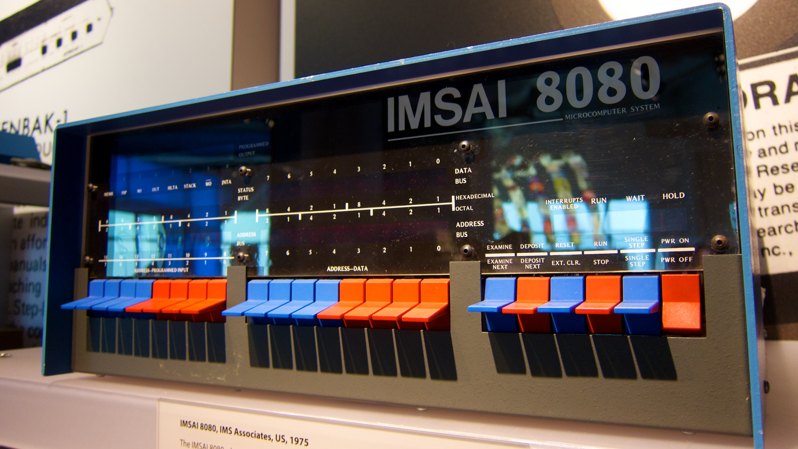

IMSAI 8080
A computer you program one toggle switch at a time — the front panel is the entire interface

Overview
The IMSAI 8080 was the first clone of the MITS Altair 8800, built by William Millard's IMS Associates (later IMSAI Manufacturing Corp) in San Leandro, California, after chief engineer Joe Killian decided MITS could not be relied on as a parts supplier. Advertised in Popular Electronics in October 1975, the first kits shipped on 16 December 1975, and the machine was produced through 1978. It sold for $439 as a kit or $621 assembled with 1KB of RAM; roughly 17,000–20,000 units were built, and the company went on to be a major early supplier of the CP/M operating system. It is also the computer the teenage protagonist of WarGames (1983) uses to reach "Joshua" and stumble into NORAD's wargame.
What makes it an HCI artifact rather than just an important computer is the front panel. In the basic configuration there is no ROM monitor, no operating system, no keyboard and no display — just 16 address switches, 8 data switches, a group of 8 sense switches, 6 control switches, and rows of red LEDs for address, data-bus, status, and programmed-output. Programming meant resetting the machine, setting the address switches to zero, EXAMINEing location 0, toggling the 8 data switches to the next byte of machine code, and DEPOSITing it — then DEPOSIT NEXT, byte after byte, for the whole program. The operator was the boot loader, the memory monitor, and the assembler combined. The Smithsonian's own object record notes that this kind of programming "was very slow and tedious — any mistake could corrupt the system and you'd have to start over again. Only true hackers were successfully efficient at operating an IMSAI 8080."
Deep dive
From the IMSAI 8080 user manual: "A full set of 16 address switches and 6 control function switches accept operator control and input." To run even a trivial program the operator flips RESET, sets the address switches to zero, raises EXAMINE to verify location 0, sets the 8 data switches to the first byte's bit pattern, and raises DEPOSIT (or DEPOSIT NEXT, which auto-increments). This repeats for every byte — the manual's own first test program is seven bytes long — then EXAMINE NEXT walks memory to verify, and SINGLE STEP watches each instruction cycle crawl across the LEDs. Any mistake meant re-entering bytes.
The manual's "Program 3" is a game "using the INPUT switches and the PROGRAMMED OUTPUT lights on the IMSAI 8080 front panel." A bit pattern circulates across the 8 programmed-output LEDs; each time a sense switch is moved, the light directly above it toggles. Players race to turn all the lights off (or all on), with the rotation speed set by the binary value on the switches at reset. The machine reads the sense switches as an input port (address FF hex / 377 octal) and drives the output LEDs with an output instruction to the same port. In 1976 the front panel was simultaneously boot loader, debugger, and game controller.
The IMSAI 8080 is the front-panel machine David uses in WarGames (1983) — the machine that made the toggle-switch panel the visual shorthand for the computer age. Collectors today pay from a few hundred dollars for incomplete units to thousands for working systems; the Smithsonian (nmah_1422364), the Computer History Museum, and the University of Waterloo's computer museum all hold examples.
RCA Studio II and Fairchild Channel F are cartridge consoles; the Rockwell AIM-65 (1978, in this museum) already has a keyboard and a ROM monitor. The IMSAI 8080 is the museum's first artifact whose entire interface is raw binary: no characters, no screen, no abstraction between the human and the bus.
Team & pioneers
- IMS Associates / IMSAI Manufacturing Corporation San Leandro, California company that designed, advertised, and built the IMSAI 8080.
- William Millard founder of IMS Associates; later founded the ComputerLand retail chain.
- Joe Killian chief engineer who decided to clone the Altair after MITS could not supply parts.
Media

